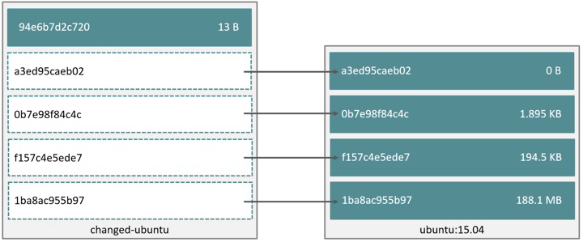
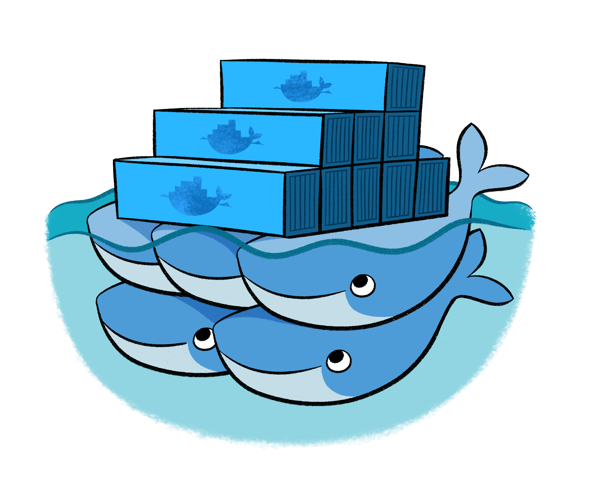
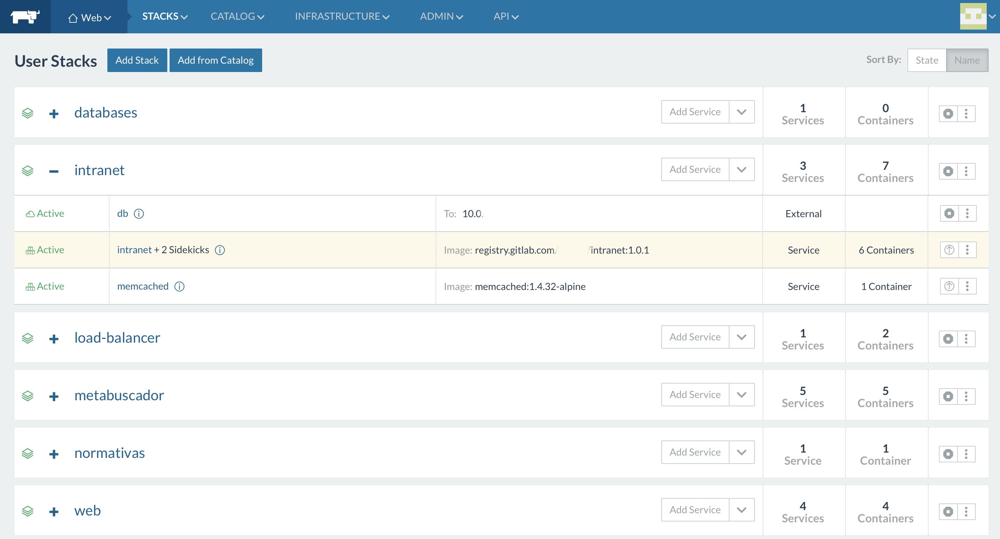

De desarrollo a producción usando
docker

Christian A. Rodriguez
https://github.com/chrodriguez
@car_unlp
Agenda
- Docker: introducción rápida
- Consideraciones para trabajar con docker
- Volumenes
- Docker Compose
- Workflow de desarrollo
- Docker en producción
- Rancher
- Workflow completo
Docker
Introducción rápida
¿Qué es docker?
- Contenedores de software.
- Empaqueta aplicaciones en una unidad estándar de intercambio.
- Única pieza de software en un filesystem completo que contiene todo lo necesario para ejecutar una aplicación: código, librerías, herramientas, etc.
- Garantiza que el software siempre correrá de igual forma sin importar su ambiente.
¿Por qué Docker?
- Rápida configuración de entornos de desarrollo.
- Favorece las arquitecturas de microservicios.
- Diferencias entre el ambiente de desarrollo, testing y producción.
- Instalación de una aplicación en diferentes plataformas.
- Deploy de aplicaciones complejas.
- Ejecución de código antiguo.
- Escalamiento horizontal.
¿Dónde corre Docker?
- Docker puede correrse en:
- Linux.
- MacOS.
- Windows.
La idea detrás de los contenedores
- Sistema Operativo recortado.
- Un único proceso corriendo: buena práctica.
- No utilizan manejadores de procesos tipo systemd.
- Red privada bridgeada en los contenedores.
- Si se quiere exponer un puerto se debe realizar explícitamente.
- El filesystem utiliza Union File System (UFS).
- Basado en capas.
- Al eliminar un contenedor, su filesystem desaparece.
Imágenes y contenedores
- Imagen:
- Filesystem y parámetros para utilizarla.
- No cambia nunca y no tiene estados.
- Contenedor:
- Instancia de una imagen (resultado de ejecutarla).
- Tiene una capa de RW volátil.
Imágenes y contenedores

Imágenes y contenedores

Imágenes y contenedores

Imágenes y contenedores

Comandos básicos
# Más usados
docker run
docker ps
docker build
docker images
docker logs
docker inspect
docker volume
# Otros comandos comunes
docker commit
docker pull
docker push
docker tag
Un ejemplo de uso de docker
El siguiente es un ejemplo interactivo
$ docker run --rm -it ubuntu:14.04
Unable to find image 'ubuntu:14.04' locally
14.04: Pulling from library/ubuntu
c2c80a08aa8c: Pull complete
6ace04d7a4a2: Pull complete
f03114bcfb25: Pull complete
99df43987812: Pull complete
9c646cd4d155: Pull complete
Digest: sha256:b92dc7814b2656da61a52a50020443223445fdc2caf1ea0c51fa38381d5608ad
Status: Downloaded newer image for ubuntu:14.04
root@99a3403db59a:/# cat /etc/issue
Ubuntu 14.04.5 LTS \n \l
Creando imágenes
- Las imágenes docker pueden crearse:
- A partir de un contenedor ó
- Usando Dockerfiles
Imágenes a partir de un contenedor
Como los contenedores establecen una capa volátil por encima de la pila de capas de una imagen origen, una vez editado todo lo necesario en un contenedor, los cambios pueden comitirse en una imagen.
$ docker run -it ubuntu:14.04
root@7c78d0a777df:/# apt-get update \
&& apt-get install -y nginx && apt-get clean
root@7c78d0a777df:/# exit
Imágenes a partir de un contenedor
Verificamos el contenedor anterior
$ docker ps -a
CONTAINER ID IMAGE COMMAND CREATED STATUS PORTS NAMES
7c78d0a777df ubuntu:14.04 "/bin/bash" 4 minutes ago Exited (0) 3 seconds ago dreamy_joliot
Creamos la imagen
$ docker commit 7c78d0a777df chrodriguez/nginx:ubuntu-14.04
A partir de ahora es posible utilizar la imagen chrodriguez/nginx:ubuntu-14.04
$ docker run --rm -p 8080:80 chrodriguez/nginx:ubuntu-14.04 \
nginx -g "daemon off;"
Dockerfile
- Archivo de texto plano para crear imágenes de Docker.
- Permite escribir instrucciones a ejecutar.
- Automatiza el proceso de la creación de imágenes.
- Permite repetir y modificar fácilmente una imagen.
- Generar de forma simple imágenes derivadas.
Dockerfile
FROM ubuntu:16.04
# Instalar Nginx y configurar una página personalizada
RUN apt-get update && apt-get install -y nginx
RUN mkdir /var/www/html/ejemplo
RUN echo "<html><h1>Nginx en Docker</h1></html>" > /var/www/html/ejemplo/index.html
EXPOSE 80
CMD ["nginx", "-g", "daemon off;"]
Creamos la imagen
docker build -f Dockerfile -t chrodriguez/nginx:ubuntu-16.04 .
Historia de imagen
$ docker history chrodriguez/nginx:ubuntu-16.04
IMAGE CREATED CREATED BY SIZE
8fd110f3364a 9 minutes ago /bin/sh -c #(nop) CMD ["nginx" "-g" "daemon 0 B
df1abe4570d5 9 minutes ago /bin/sh -c #(nop) EXPOSE 80/tcp 0 B
4c9ad433769b 9 minutes ago /bin/sh -c echo "<html><h1>Nginx en Docker</h 38 B
aff42d6aa899 9 minutes ago /bin/sh -c mkdir /var/www/html/ejemplo 0 B
136943551ea1 9 minutes ago /bin/sh -c apt-get update && apt-get install 96.07 MB
f753707788c5 4 weeks ago /bin/sh -c #(nop) CMD ["/bin/bash"] 0 B
<missing> 4 weeks ago /bin/sh -c mkdir -p /run/systemd && echo 'doc 7 B
<missing> 4 weeks ago /bin/sh -c sed -i 's/^#\s*\(deb.*universe\)$/ 1.895 kB
<missing> 4 weeks ago /bin/sh -c rm -rf /var/lib/apt/lists/* 0 B
<missing> 4 weeks ago /bin/sh -c set -xe && echo '#!/bin/sh' > /u 745 B
<missing> 4 weeks ago /bin/sh -c #(nop) ADD file:b1cd0e54ba28cb1d6d 127.2 MB
La registry
- Servicio para almacenar y distribuir imágenes de Docker.
- Disponible en forma local o usar servicios en la nube:
- Instalación local:
- Acceso local para mayor velocidad de descarga.
- Imágenes privadas en un ambiente controlado y gestionado por la organización.
- Servicios en la nube:
- Generalmente las registries privadas tienen costo.
- Instalación local:
Registry como servicios
-
Docker Hub
- Gratis para imágenes públicas.
- Plan pago para imágenes privadas.
- Soporta builds automáticos.
- Cuentas para organizaciones.
-
Gitlab Registry
- Gratis para imágenes públicas o privadas.
- Soporta builds automáticos.
- Cuentas para organizaciones.
Consideraciones para trabajar con docker
Introducción
- Ya sabemos que:
- Las imágenes Docker son inmutables.
- Los contenedores crean una capa con las diferencias correspondientes respecto de la imagen original.
- Entonces los contenedores deberían minimizar los cambios respecto de la imagen original.
- Optimizando el uso de espacio y evitando impactos de performance.
- Promoviendo la reusabilidad.
Inmutabilidad en la infraestructura
- Desplegar una actualización de una aplicación, consiste en crear nuevas intancias y destruir las anteriores, en vez de actualizarlas sobre la instancia productiva.
- Una vez que una aplicación está corriendo, ¡evitamos tocarla! promoviendo así:
- Repetibilidad.
- Reducir costos de mantenimiento.
- Simplificar rollbacks.
Lograr inmutabilidad
- Deben cumplirse los siguientes requerimientos:
- La aplicación debe ser stateless. Su estado debe almacenarse en un servicio por fuera del alcance de la infraestructura inmutable.
- Existe un template y/o conjunto de instrucciones que permiten desplegar una instancia de la aplicación desde cero.
El segundo punto lo resuelve fácilmente Docker.
¿Qué es dinámico entonces?
- Archivos que se generan por la aplicación.
- Uploads desde la aplicación.
- Logs.
- Spool.
Imágenes mal formadas
Un mal diseño de las imágenes impactará en la performance de los contenedores que generarán grandes capas con datos dinámicos.
Ante la actualización del contenedor, estos datos se perderán.
¿Cómo verificar un mal diseño?
La opción -s visualiza el tamaño de la capa del contenedor. Su valor debe tender a cero
$ docker ps -s
docker ps -s
CONTAINER ID IMAGE .... SIZE
6ce39ac62830 ubuntu:16.04 .... 0B (virtual 120MB)
root@6ce39ac62830:/# echo "hola" > /tmp/prueba
$ docker ps -s
docker ps -s
CONTAINER ID IMAGE .... SIZE
6ce39ac62830 ubuntu:16.04 .... 5B (virtual 120MB)
¿Cómo verificar un mal diseño?
El tamaño es lo que crece el contenedor respecto de la imagen. El tamaño virtual es lo que ocupa el contenedor sumado al tamaño de la imagen.
root@6ce39ac62830:/# dd if=/dev/zero of=/tmp/lala.img bs=1M count=10
10+0 records in
10+0 records out
10485760 bytes (10 MB, 10 MiB) copied, 0.0127865 s, 820 MB/s
$ docker ps -s
docker ps -s
CONTAINER ID IMAGE .... SIZE
6ce39ac62830 ubuntu:16.04 .... 10.5MB (virtual 131MB)
$ docker diff 6ce39ac62830
C /tmp
A /tmp/lala.img
A /tmp/prueba
Buenas prácticas
- Los contenedores deben ser efímeros: pararlos, destruirlos y volverlos a iniciar con una mínima configuración.
- Evitar paquetes innecesarios: las imágenes no deben incluir paquetes que no se utilicen.
- Un proceso por contenedor: en la mayoría de los casos, se debe correr un proceso por contenedor.
- La (in)necesidad de ssh: acceder a un contenedor es algo que debemos evitar.
Volúmenes
¿Cómo se persisten los datos?
- Los contenedores son volátiles e inmutables.
- Debemos preservar la información importante.
- ¿Dónde?
- En volúmenes de datos.
Características de los volúmenes
- No utilizan un sistema de archivos de unión (UFS).
- Pueden compartirse y reusarse entre contenedores.
- Los cambios se hacen directamente en el volumen.
- La información del volumen no se incluye en la imagen.
- Persisten aún cuando se eliminen todos los contenedores que los usan.
- Pueden quedar volúmenes sin referenciar.
Tipos de volúmenes
- Volúmenes anónimos.
- Volúmenes nombrados.
- Volúmenes desde el SO host.
Tipos de volúmenes
- Al crear un volúmen anónimo o nombrado, la información que exista en el punto de montaje se copia al volumen.
- Con volúmenes desde el SO host o desde otro contenedor, se oculta la información que exista en el punto de montaje.
- Correspondencia con el comando mount.
Manejo de Volúmenes
$ docker run -it -v /prueba ubuntu:16.04 /bin/bash
root@a9c1a6e6c0ea:/# ls /prueba/
root@a9c1a6e6c0ea:/# echo "Prueba" > /prueba/archivo
root@a9c1a6e6c0ea:/# exit
$ docker ps -a
CONTAINER ID IMAGE COMMAND CREATED STATUS NAMES
a9c1a6e6c0ea ubuntu "/bin/bash" 2 minutes ago Exited (0) About a minute ago small_jennings
$ docker volume ls
DRIVER VOLUME NAME
local e9c7022b8c7bec55891ca44b8c40de1e5f41cf0fe9505a334bca06a484a5ff1f
$ ls /var/lib/docker/volumes/e9c7022b8c7bec55891ca44b8c40de1e5f41cf0fe9505a334bca06a484a5ff1f/_data
archivo
Volúmenes nombrados
$ docker run -it -v test:/prueba ubuntu /bin/bash
root@7def6f99f957:/# ls /prueba/
root@7def6f99f957:/# echo "Prueba" > /opt/archivo
root@7def6f99f957:/# exit
$ docker ps -a
CONTAINER ID IMAGE COMMAND CREATED STATUS NAMES
7def6f99f957 ubuntu "/bin/bash" 2 minutes ago Exited (0) 2 minutes ago mad_mccarthy
$ docker volume ls
DRIVER VOLUME NAME
local test
$ ls /var/lib/docker/volumes/test/_data
archivo
Docker Compose
¿Qué es Docker Compose?
- Herramienta que permite correr aplicaciones compuestas por múltiples contenedores.
- La arquitectura se define y configura en un archivo de texto (YAML).
- Simple e intuitivo.
- Se vale de un comando para:
- Iniciar, detener y reconstruir servicios.
- Ver el estado de los servicios, los logs, etc.
Versiones de Docker Compose
- Hay tres versiones mayores diferentes, la 1, la 2 y la 3.
- Entre la 1 y la 2 no son compatibles entre sí, entre la 2 y la 3 comparten estructura, pero se quitan algunas opciones en la 3.
- Veremos la sintaxis de la versión 3.
Docker Compose: ejemplo
- Instalación de Wordpress.
- Vamos a crear un archivo llamado
docker-compose.yml. - Definiremos allí la arquitectura de la aplicación.
- Nos valdremos del comando
docker-composepara levantar Wordpress e interactuar con los contenedores generados.
- Vamos a crear un archivo llamado
Docker compose para wordpress
version: '3'
services:
db:
image: mysql:5.7
volumes:
- dbdata:/var/lib/mysql
restart: always
environment:
MYSQL_ROOT_PASSWORD: super_secret
MYSQL_DATABASE: wordpress
wordpress:
depends_on:
- db
image: wordpress:4.9.5-php7.0-apache
links:
- db
ports:
- "80:80"
restart: always
environment:
WORDPRESS_DB_HOST: db
WORDPRESS_DB_PASSWORD: super_secret
volumes:
- site:/var/www/html
volumes:
dbdata:
site:
Descargar docker-compose.yml
Iniciando los servicios de Wordpress
$ docker-compose up -d
Creating network "wordpress_default" with the default driver
Creating volume "wordpress_dbdata" with default driver
Creating volume "wordpress_site" with default driver
Creating wordpress_db_1 ... done
Creating wordpress_wordpress_1 ... done
$ docker-compose ps
Name Command State Ports
-----------------------------------------------------------------------------------
wordpress_db_1 docker-entrypoint.sh mysqld Up 3306/tcp
wordpress_wordpress_1 docker-entrypoint.sh apach ... Up 0.0.0.0:80->80/tcp
Usamos Wordpress

$ docker-compose logs -f
wordpress_1 | 172.27.0.1 - - [18/Apr/2018:17:40:45 +0000] "GET / HTTP/1.1" 302 374 "-" "Mozilla/5.0 (X11; Linux x86_64) AppleWebKit/537.36 (KHTML, like Gecko) Chrome/65.0.3325.181 Safari/537.36"
wordpress_1 | 172.27.0.1 - - [18/Apr/2018:17:40:45 +0000] "GET /wp-admin/install.php HTTP/1.1" 200 4310 "-" "Mozilla/5.0 (X11; Linux x86_64)
AppleWebKit/537.36 (KHTML, like Gecko) Chrome/65.0.3325.181 Safari/537.36"
wordpress_1 | 172.27.0.1 - - [18/Apr/2018:17:40:47 +0000] "GET /favicon.ico HTTP/1.1" 200 228 "http://localhost/wp-admin/install.php" "Mozilla/5.0 (X11; Linux x86_64) AppleWebKit/537.36 (KHTML, like Gecko) Chrome/65.0.3325.181
Safari/537.36"
Iniciando y deteniendo Wordpress
Para detenerlo
$ docker-compose stop
Stopping wordpress_wordpress_1 ... done
Stopping wordpress_db_1 ... done
Para iniciarlo
$ docker-compose start
Starting db ... done
Starting wordpress ... done
docker-compose down detiene y luego remueve los contenedores
Workflow de desarrollo
Los equipos de desarrollo…
- Deben
- Versionar el código: SVN, GIT.
- Utilizar Versionado semántico.
- Deberían
- Aplicar Testing: TDD o mejor aún BDD.
- Revisión de código.
- Integración continua.
- Flujos claros de versionado de código: git-flow, GitLab Flow, Github Flow.
La infraestructura…
Debe proveer ambientes diferentes para poder aplicar controles de calidad previos a la puesta en producción:
- Preproducción
- QA
- Pruebas
Automatizar la creación y mantenimiento de estos ambientes
El versionado
- Implementando un flujo para el uso del versionado de código, se realizan varios merge a la rama principal, generalmente master.
- Integración continua.
- Correr tests antes de cada merge.
- Revisión de código: simple con flujos propuestos por GitHub/Gitlab a través PR/MR.
Nuevos releases
- Un nuevo release respeta semver, entonces su nombre será X.Y.Z.
- Según el lenguaje, será necesario compilar y subir el binario a un repositorio: Artifactory o Nexus.
- Con docker es el momento de crear una imagen docker y subirla a la registry
Si automatizamos estas tareas estamos implementando entrega continua
Despliegue de versiones
- No es lo mismo un despliegue de cero que una actualización
- Existe estrategias de actualización:
- Esta tarea es complicada si se realiza manual
- Sobre todo con aplicaciones que escalan horizontalmente
- Docker es una gran simplificación a este problema
Docker en producción
Dos enfoques
- Usar Docker para iniciar servicios de forma aislada.
- Usar un cluster de Docker.
Docker en forma aislada
- Cada servidor Linux corre el servicio de Docker.
- Los contenedores pueden iniciarse automáticamente durante el booteo usando:
- Manejadores de procesos: upstart, systemd o supervisor, etc
- A través de políticas de reinicio (Docker >= 1.2).
Clusters docker
Un cluster dispone de nodos corriendo Docker Engine de tal forma de poder utilizarlos para correr contenedores.
Estos nodos pueden usar SO muy pequeños (~ 50MB) dado que su única razón de ser es la de proveer un kernel con docker engine:
Los clusters más conocidos
|  | Swarm |
| Cattle/Rancher | |
| |
Kubernetes |
| Apache Mesos |
Características de todos los clusters
- Diseño descentralizado.
- Servicios, pods o stacks en vez de contenedores.
- Posibilidad de escalar.
- Conciliación para alcanzar el estado deseado.
- Service discovery.
- Load balancing.
- Actualizaciones en caliente.
Consideraciones
- El scheduler es el encargado de determinar dónde se inicia cada contenedor.
- Asociado al scheduler trabajan los health checks que garantizan la conciliación de un estado deseado: que haya N contenedores para el servicio X.
- La distribución mágica del scheduler complica el manejo de volúmenes.
- Los volúmenes pertenecen a un nodo.
- Si el nodo cambia, se pierden los datos.
Volúmenes distribuidos
- Necesidad de compartir datos entre los nodos del cluster.
- Aparecen diferentes implementaciones de volúmenes compartidos. Las más
populares son:- NFS
- Flocker
Rancher
- Interfaz web amigable para gestionar un cluster de Docker.
- Incluye una API que permite administrar el cluster.
- Utilidades de línea de comandos.
- Soporta múltiples plataformas de clustering para Docker:
- Cattle
- Kubernetes
- Swarm
- Apache Mesos
- Windows
Ejemplo Rancher

Workflow completo
Un ejemplo en gitlab
El proyecto en desarrollo
Según el readme, corremos:
cd docker
docker-compose -p demo-lb-dev \
-f docker-compose.yml -f docker-compose.dev.yml up
Notar que pasamos 2 docker-compose.yml
En esta modalidad podemos trabajar sin instalar nada en nuestra PC, editando el
archivo php de la raíz del proyecto
Entrega continua
El archivo .gitlab-ci.yml
image: docker:latest
services:
- docker:dind
stages:
- build
before_script:
- export IMAGE_TAG="$CI_BUILD_REF_NAME"
- docker login -u "gitlab-ci-token" -p "$CI_BUILD_TOKEN" $CI_REGISTRY
build-docker-image:
stage: build
script:
- docker build --pull -f docker/Dockerfile -t "$CI_REGISTRY_IMAGE:$IMAGE_TAG" .
- docker push "$CI_REGISTRY_IMAGE:$IMAGE_TAG"
only:
- /^\d+\.\d+\.\d+/
Un nuevo tag equivale a una nueva imagen docker
La aplicación en rancher
Usaremos rancher-cli con el siguiente docker-compose.yml
version: '2'
services:
web:
image: registry.gitlab.com/chrodriguez/demo-lb:0.0.1
labels:
application: demo-lb
$ rancher up
Configuraremos el load balancer a partir del label seteado
rancher-cli utiliza variables de ambiente que lo configuran
El potencial de Rancher
- Load balancer.
- Servicios externos.
- Escalamiento horizontal.
- Políticas de schedulling.
- Healthchecks.
- Auto scalling: por servicio o hosts de la infraestructura.
- Integracion con virtualizadores y proveedores de cloud.
- Integracion con DNS: powerdns o servicios de cloud.
- Catálogo.
Las preguntas…
- ¿Y los logs?
- ¿Y el monitoreo?
- ¿Y las bases de datos?
- ¿Y los backups?
Logs
Monitoreo
- Hoy están de moda:
Las bases de datos y backups
- Las bases de datos pueden dockerizarse o no
- Los backups deben hacerse sólo de los volúmenes
- En mi caso, rsnapshot es una excelente alternativa
- Backupeando la base de datos de rancher, podemos recuperar nuestra infra completa
¿Preguntas?
Algunas perlitas
Correr una aplicación X11:
$ xhost +
$ docker run -it --rm -e HOME=$HOME -e DISPLAY=$DISPLAY \
-v /tmp/.X11-unix:/tmp/.X11-unix -v $HOME:$HOME --user `id -u` \
jarfil/gimp-git
Compilar sin compilador:
$ docker run --rm -v "$PWD":/usr/src/myapp \
-w /usr/src/myapp gcc:4.9 gcc -o app *c -Wall
Bases de datos para desarrollo
docker run --name=mysql-5.6 -d \
-e MYSQL_ALLOW_EMPTY_PASSWORD=true -p 3307:3306 \
--restart=always -v mysql-5.6:/var/lib/mysql \
mysql:5.6